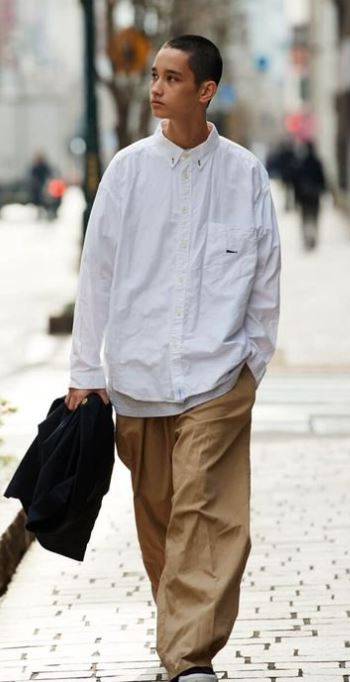
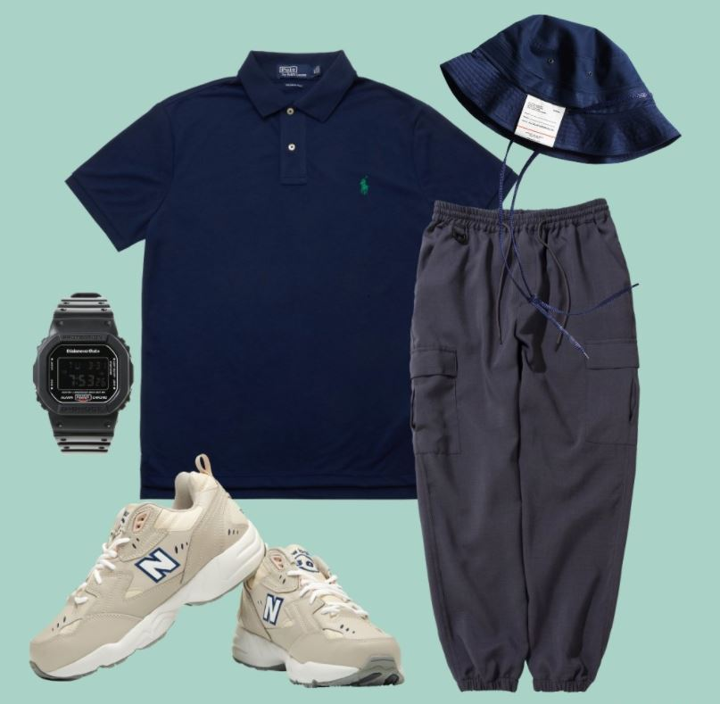
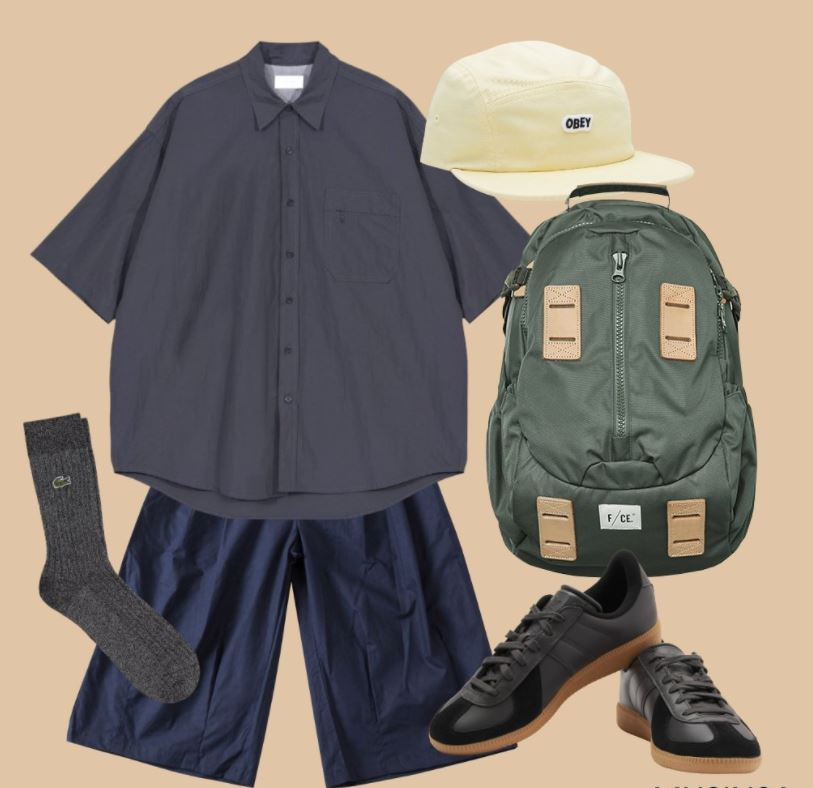
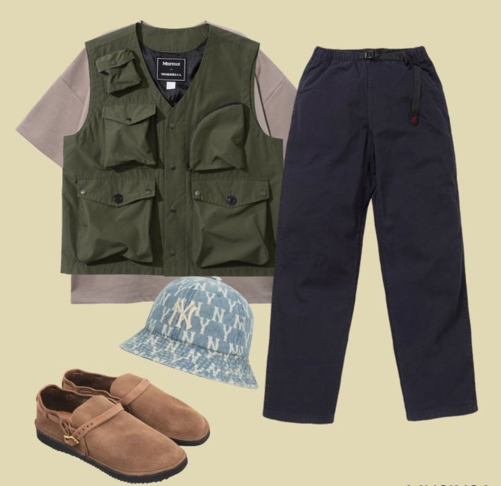
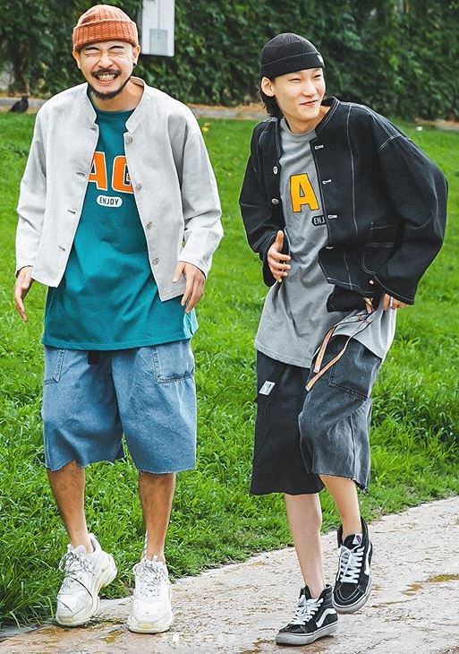
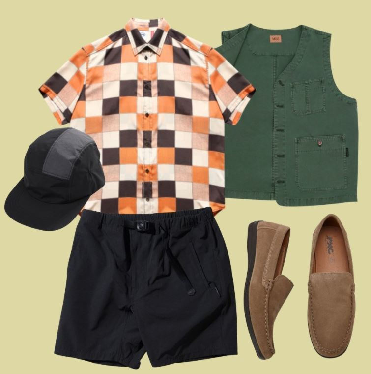
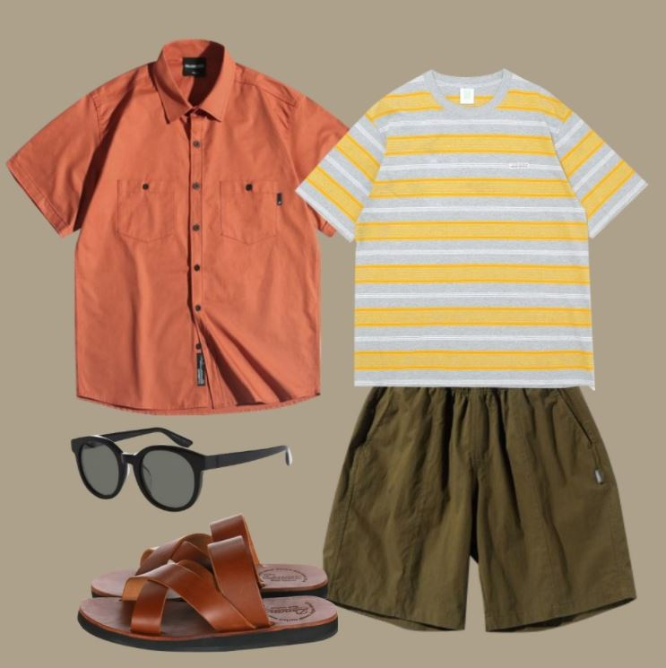
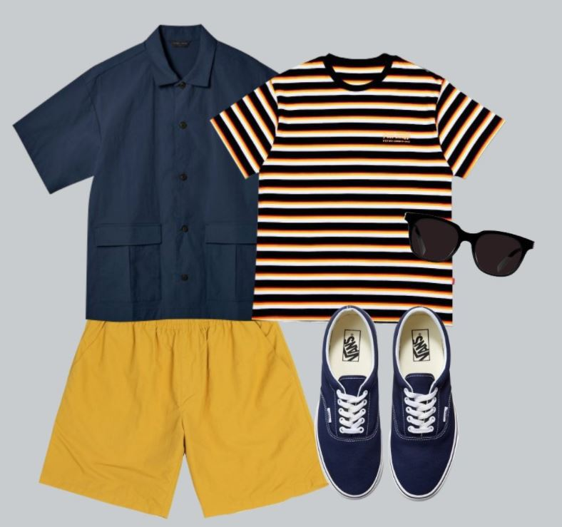

City Boy Look
The city boy look is one of the fashions
that originated in Japan.
The advantage of the city boy look I think is that it is comfortable but stylish.
One of the big attractions is that anyone can try it.
It will be one of my favorite styles in the future.




Amekaji
Amekaji is a Japanese reinterpretation of American casual.
I think the charm of Amikaji is a comfortable and masculine fashion.
Also, Amekaji has a feeling of being comfortable to a little heavy and luxurious.


